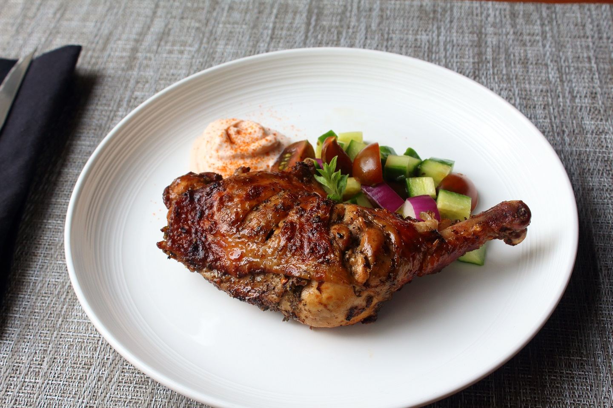

The secret to this simple grilled chicken is a very powerful marinade and 'roasting' it slowly over semi-indirect heat on the grill.
This recipe takes around 4 hours
for marination of chicken, 15 minutes of
prep time, and 20 minutes of cooking.
It serves 6.